Ancient Egyptian King, Egyptian Commoners
Setting the Stage
Ancient Egyptian
The desert environment of Ancient Egypt dictated that clothing had to be light in weight as well as color. Linen and cotton were especially favored for these qualities. Finer linens and silks were used very rarely for royalty or high priests. Men usually went topless, sporting a skirt-like loincloth fastened with a belt, or wore a long loose robe. Women were dressed in a large sheet of fabric that was draped over and around their bodies to form a long robe. Light leather or reed sandals were worn on the feet and well-off people decorated themselves with chunky, ornate metal jewelry.


Egyptian Court Official, Egyptian King, Fanbearer

Ancient Egyptian Soldiers, Egyptian King In Battle Attire, Charioteer
Ancient Roman
In Ancient Rome, tunics or togas were the norm for both genders. While men's tunics ended near the knees, women's often extended to the floor. The peplos for women looks similar, but was made from two separate pieces of cloth, attached with pins and a belt. Brides would wear a decorated tunic with a bright red veil. Married women wore a stola, which was another tunic worn over the first one, along with a palla or cloak. Upper classes used silks, and elaborate jewelry of precious metals to indicate their status and wealth. Unlike the Ancient Egyptians, who mostly stuck to natural colors, the Ancient Romans reveled in dying their fabrics deep hues that denoted status.

Standard Bearer (German), Roman General

Noblewomen, Slave Girl

Roman Lictor, Emperor, Nobleman
Medieval/Byzantine
Byzantines favored fabrics with rich colors and patterns, especially silks if they could be afforded. Their clothing was loose and consisted of layered tunics and cloaks. Fashions that originated in Ancient Rome were still popular, such as the toga and stola. Women wore clothing that kept them mostly or fully covered, with veils or wrapped fabric to cover the hair. In Western Europe too, women's fashions tended to be quite layered, voluminous and long. In contrast, men could wear hose, along with a jacket. Rich people opted for fine linens or even silks, while lower classes wore cheaper wool.

Knights and Soldiers - First Crusade

Deacon, Bishop, Levite - Church Official

Emperor Jusinian (482-565), Empress Theodora (d. 548)
Renaissance
In Renaissance times, there were strict guidelines as to what people were allowed to wear. This largely depended on their status or profession. Working classes wore wool or rough linens, primarily because these fabrics were cheaper and easier to work in. For working men and women, clothing was simpler than the upper classes, so that it did not get in the way of their manual labor. Nobility and rich families favored richly dyed and printed fabrics. Women's gowns were tightly-laced at the bodice to show off a fine figure, with large skirts and sleeves. Men's clothing was also specially designed to accentuate their physical prowess. Depending on a person's status, or the occasion, such as a wedding or special feast, sleeve puffs and skirts were extended even further out for a larger impression.

German Citizens

Venice (1583), Milan, Florence

Francis II (1543-1560), Elizabeth - Daughter of Henry II - as a Bride (1545-1568), Francis II as Dauphin - Oldest Son of King
18th/19th Century
Formality and decorum was key during the 18th and 19th centuries. Women were advised to wear conservative clothing to preserve their modesty. Often, the only part of their skin that showed was at the neckline and occasionally, the lower forearms. While tight corsets and large hoop skirts were originally popular, they later gave way to simpler, lighter dressers that accentuated the natural female figure. Men wore breeches or trousers, with starched shirts, and formal jackets. For many years, they would wear their shirt collars extended upwards, instead of folded down. Stylistic differences were sometimes borrowed from neighboring countries. At this time, hats were a favorite accessory and could be quite elaborate especially for well-off women.

Lady in Hoop Dress

Upper-Class Dress (1820-1825)

San Germano, On the Roman Coast
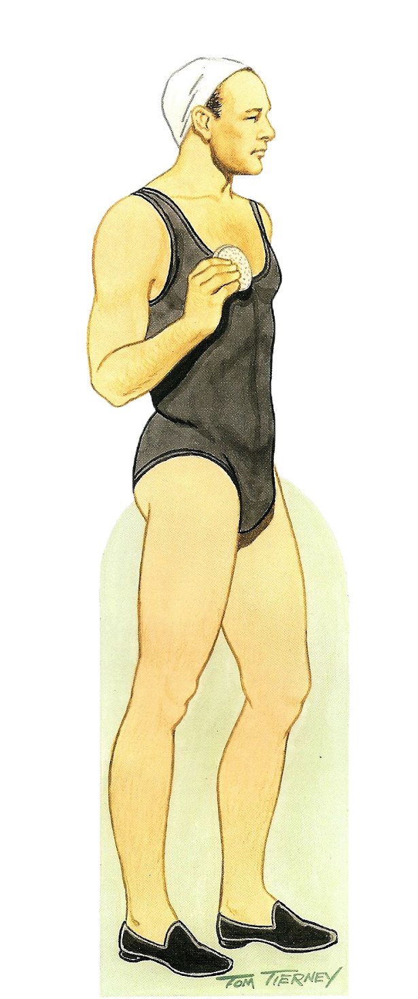 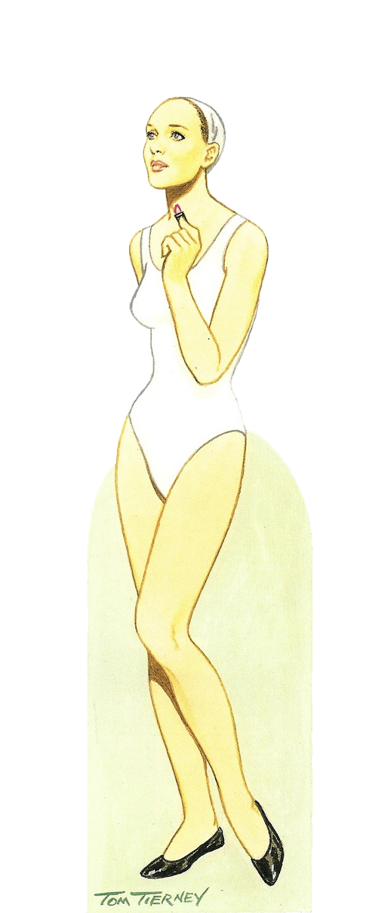
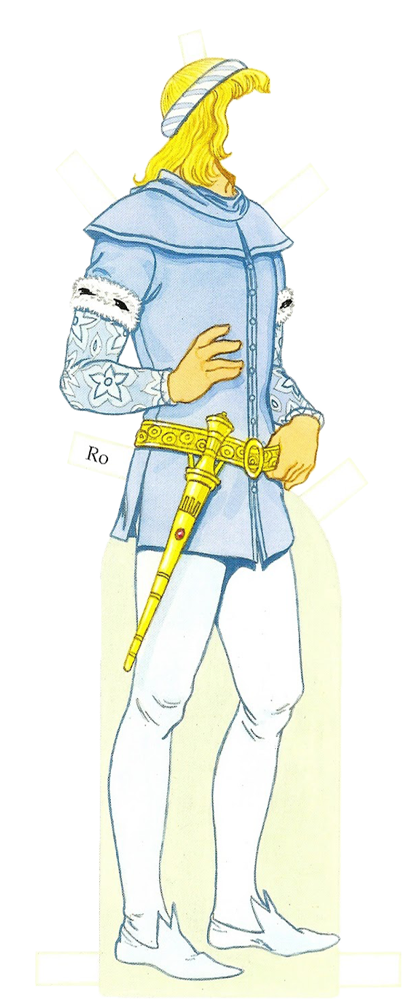 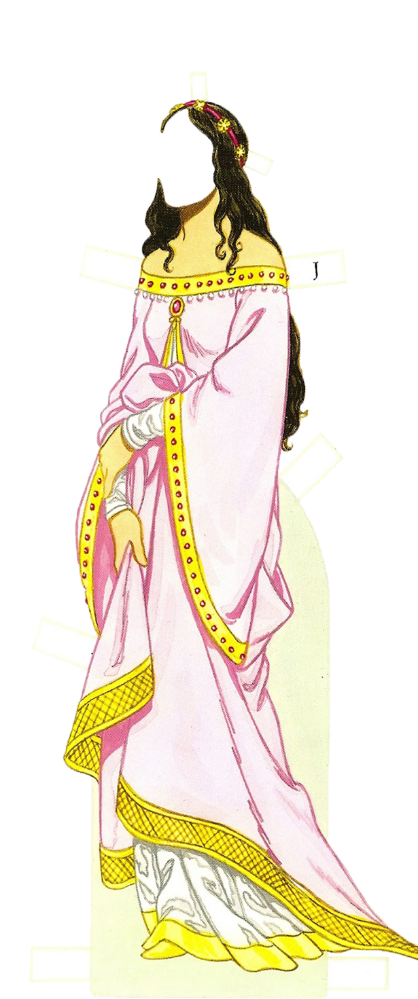 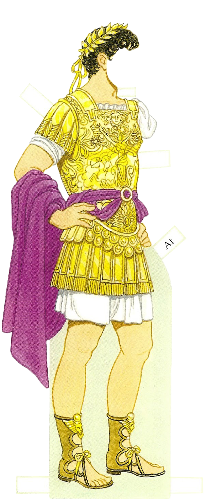 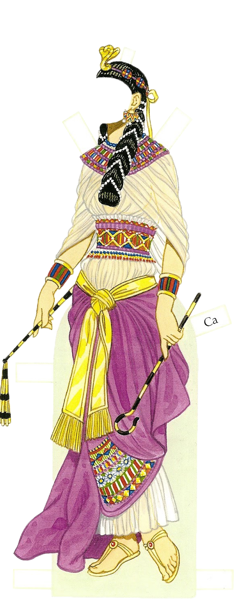 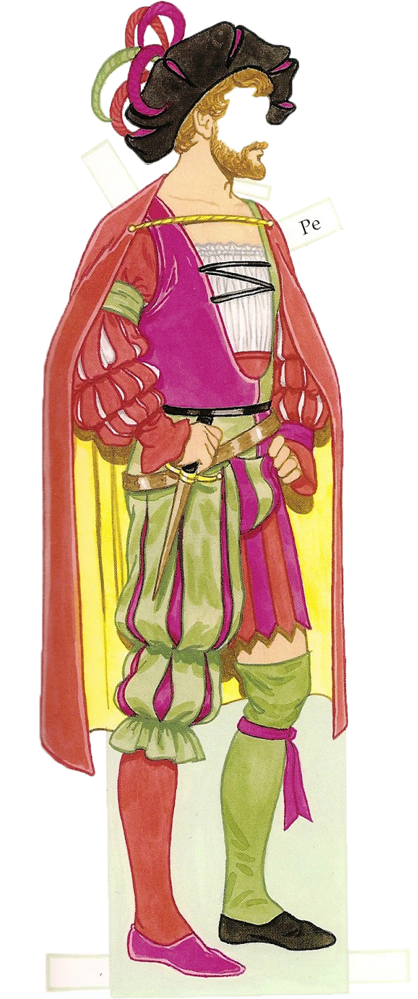 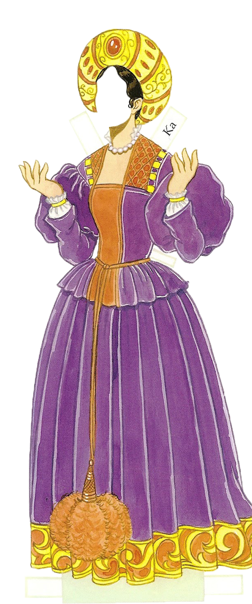 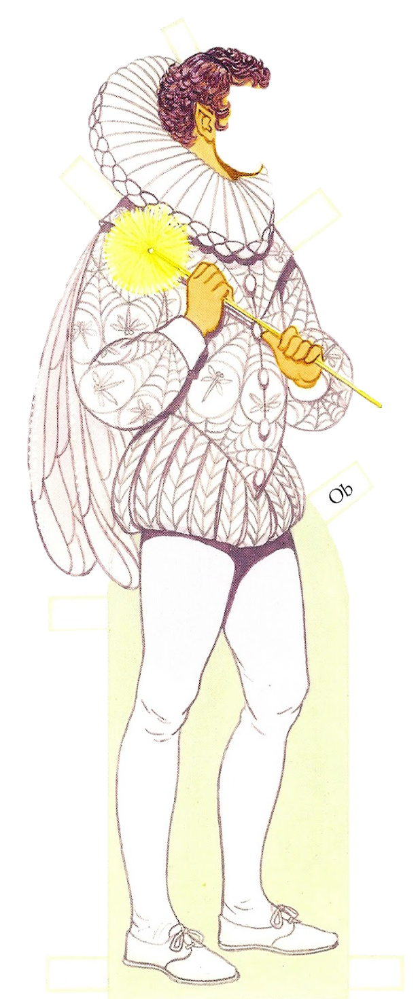  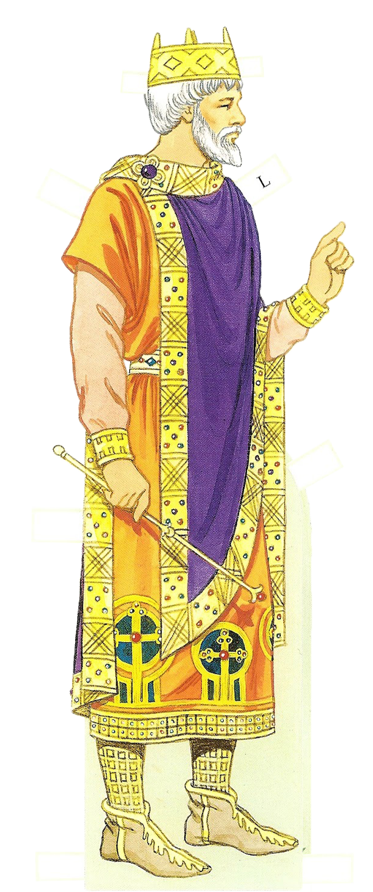 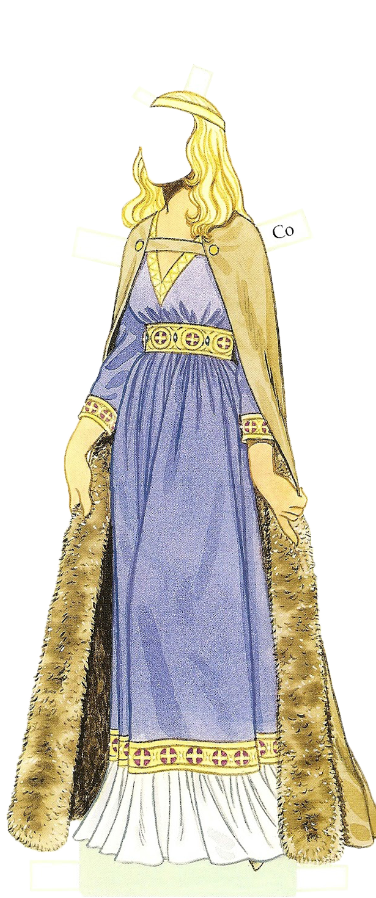
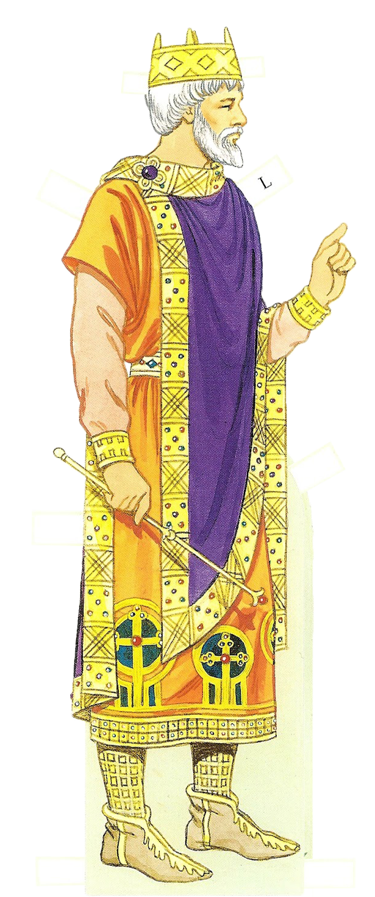 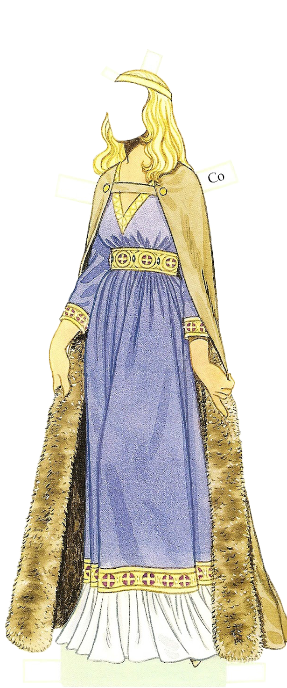
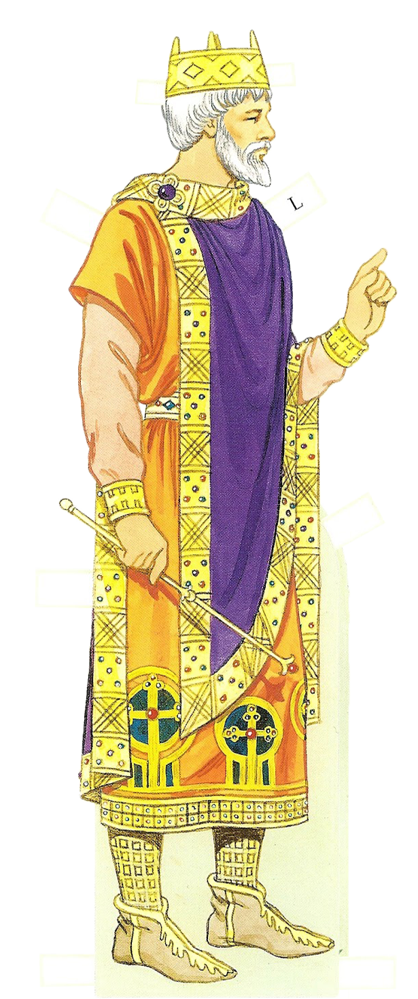 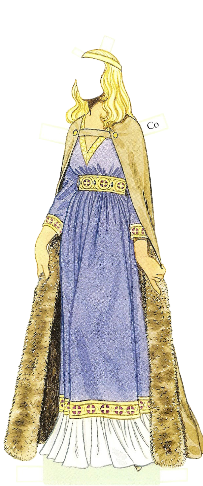